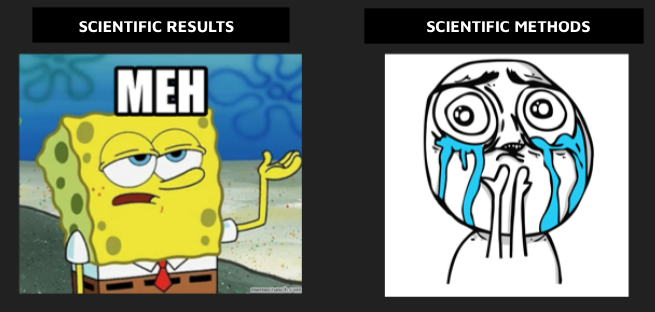
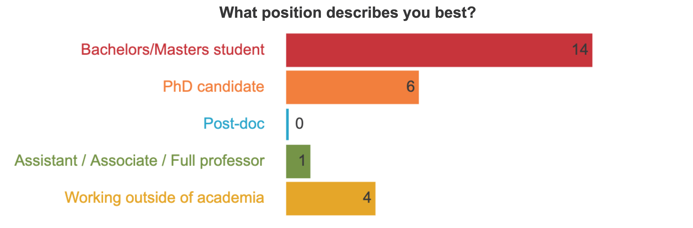
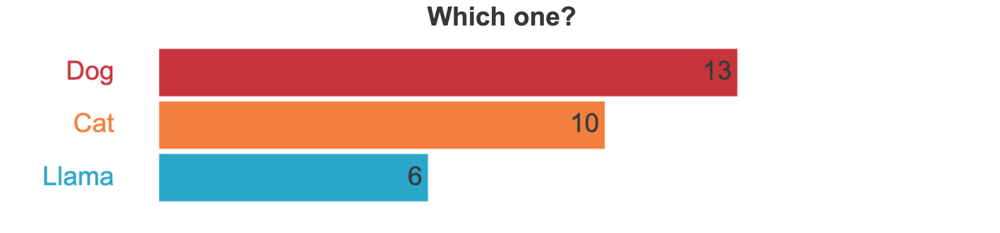
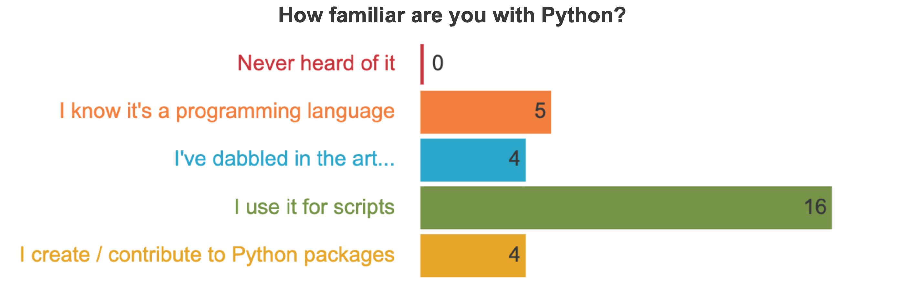
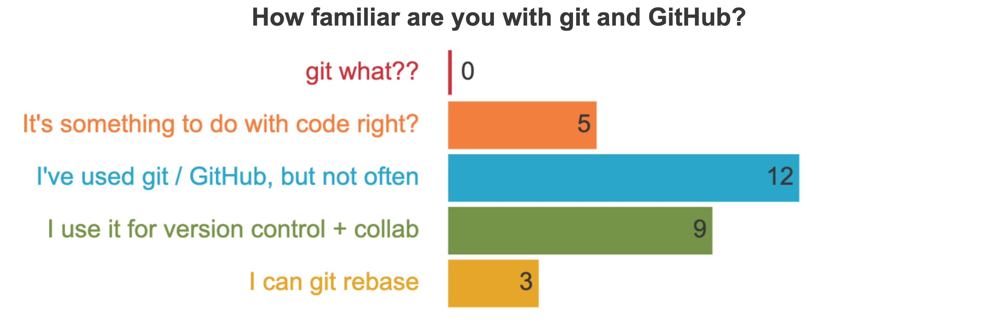
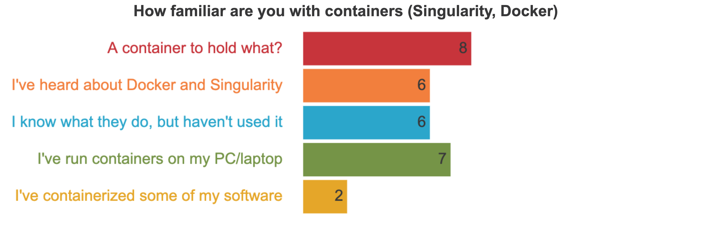
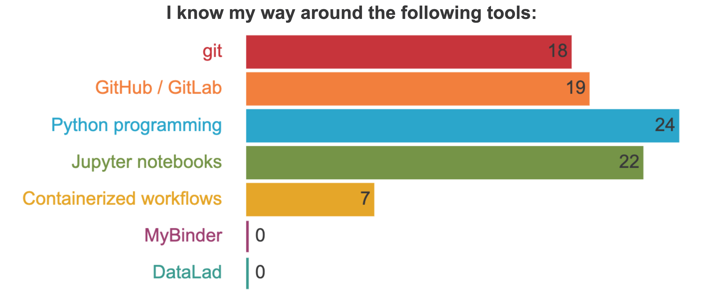
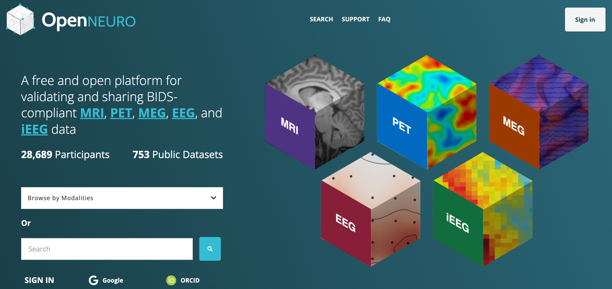
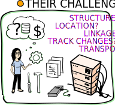
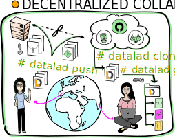

BrainHack Kraków
Tools for reproducible workflows

 @fMRwhy
@fMRwhy
 jsheunis
jsheunis
Psychoinformatics lab
Institute of Neuroscience and Medicine, Brain & Behavior (INM-7), Germany
Acknowledgements

A couple of things about me...
- I'm a research software engineer at FZ Jülich. My background:
- Studied engineering (robotics)
- Worked for large company and then a tiny startup
- Moved to the Netherlands to do a Phd in neuroimage processing
- Started my current job at FZJ in Germany
- I passionately like: open and inclusive science, programming, learning, a South African "braai"
- I passionately dislike: hierarchies, systemic mysogyny/racism/ableism, any form of admin
A couple of things about me...
- My biases:

A couple of things about YOU...
http://etc.ch/AHNN
A couple of things about YOU...
A couple of things about YOU...

A couple of things about YOU...
A couple of things about YOU...
A couple of things about YOU...
A couple of things about YOU...
A couple of things about YOU...
So let's talk about reproducibility
Reproducibility: what does it mean?

Reproducibility: what is needed?
An article about computational science in a scientific publication is not the scholarship itself, it is merely advertising of the scholarship. The actual scholarship is the complete ... set of instructions [and data] which generated the figures." David Donoho, 1998
http://statweb.stanford.edu/~wavelab/Wavelab_850/wavelab.pdf
Reproducibility: what is needed?

Transparency in methods
Reproducibility: why neuroscience?
Complex issues: Data
- Neuroscientists acquire interesting data, but it has its peculiarities:
- Depending on acquisition hardware and analysis software, some data are in proprietary formats (e.g., Neuromag, brain voyager, brain vision)
- Depending on field, data can be sizeable (e.g., (f)MRI, CT, EEG, PET, MEG)
- Heterogenous data from complex acquisitions with multiple data channels and modalities
- Datasets are getting bigger and bigger ( Bzdok & Yeo, 2017), e.g. multi-modal imaging, behavioral + genetics data in HCP (humanconnectome.org) or UKBiobank (ukbiobank.ac.uk/)
- Some data fall under General Data Protection Regulation (GDPR)
This makes data harder to access, structure, and share
Complex issues: analyses

- Much of neuroscientific research is computationally intensive, with complex workflows from raw data to result, and plenty of researchers degrees of freedom

Complex issues: analyses
-
The analytic flexibility leads to sizable variations in conclusion.
- NARPS Study,
Botvinik-Nezer et al., 2020
|
|
70 independent research groups, investigating 9 hypothesis, on the same data: Consistent conclusions for four hypothesis |
|
The variety of methodological & analytical choices is not the enemy to computational reproducibility, the challenge lies in encoding those degrees of freedom in a standardized, ideally machine-readable way Gilmore et al., 2017 |
 |
Complex issues: software/tools
- Software is a part of the digital provenance of your work: Some analysis will only work in the desired way (or at all) in specific versions of a software
- But it goes beyond "one software": Modern data analysis software has an incredibly complex dependency stack
- Example Scikit-learn Direct dependencies: 38 packages, 153 dependency relations. Recursive dependencies: 485 packages, 10715 dependency relations

Complex issues: infrastructure
"Works on my machine"

Complex issues: changes over time

Complex issues: changes over time

Complex issues: changes over time
"This used to work on my machine..."

And if the analysis does not fail, but produces different results,
how do you know which is the correct one?
So what do we end up with?

So what do we end up with?
"Shit, which version of which script produced these outputs from which version of what data?"


What should we do about it???
The pipeline needs to become transparent

|
Digital Provenance = A complete description of how a digital file came to be (FAIR principles) |
What should we do about it???
The pipeline needs to become automated

|
computational reproducibility |
Don't panic!
Large & growing ecosystem of Open Source software & data formats


... and many more!
|
- Remove accessibility barriers
- Transparent digital provenance
And finally...the point of my talk:
Tools for reproducible workflows in neuroscience
A PhD student walks into a lab...
You've just published a paper that calculated the cortical thickness for a group of research participants. You've run some statistical tests and visualized the results.
 |
 |
A PhD student walks into a lab...
Soon after, a researcher in your field sends you an email:

A PhD student walks into a lab...
How do we approach this challenge? Which skills should we have to go...
|
from reacting like this: |
to reacting like this: |
A PhD student walks into a lab...
We are going to take a step-wise, "Galaxy brain" approach:

Step 1: share data and code
Why don't we just send them the data and code "via" a download link?
Step 1: share data and code
💬 Why don't we just send them the data and code "via" a download link?- You have to create a link and send an email every time someone requests it
- There are no instructions included for running the analysis
- The person might not have the correct software or package versions installed
- They could perhaps figure out from the code which packages are required, but installing them might interfere with their existing environment, which might break things down the line.
Step 1: share data and code
So they tried running the script on their machine, and then...
💬 What went wrong? What should we have done?
Step 1: share data and code
To prevent this issue (or similar issues), while still allowing others to run the code on their machines, we need to share:| 1. | The required packages | requirements.txt |
| 2. | The Python version | virtual environment |
| 3. | Instructions for how to use these to successfully run the script | README |
| 4. | Data and code and all of the above in an accessible location | GitHub |
Example GitHub Repository
Step 1: share data and code
Open (and free) data repositories, e.g. OpenNeuro:  Extended list of repositoriesStep 1: share data and code
"Galaxy brain" update:
Step 2: software environment and requirements
After sharing the news about the public GitHub repo with our colleague, we get the following reply:
Now we'll focus on requirements and virtual environments
Step 2: software environment and requirements
Introducing requirements.txt
- Single file to capture required Python packages
- Makes installation straight-forward with
pip:
pip install -r requirements.txt
matplotlib==3.2.2
numpy>=1.16.5
pandas
nibabel
nilearn>=0.7.1
sklearn
brainspace
NOTE: not all packages/tools required for an analysis are necessarily
Python packages, or if they are they might not be available on the
Python Package Index (PyPI). This means
that installing everything with
pip and a requirements.txt
file might not be sufficient
Step 2: software environment and requirements
Introducing requirements.txt
- Check whether some packages/tools might have to be installed differently:
- APT: for managing packages (retrieval, configuration and installation) on Unix-like computer systems
- conda: Package, dependency and environment management for any language running on Windows, macOS and Linux
- Add extra installation instructions to README
git clone https://github.com/MICA-MNI/BrainStat.git
cd BrainStat
python3 setup.py build
python3 setup.py install
Step 2: software environment and requirements
Introducing Virtual Enviroments
|

|
Step 2: software environment and requirements
Introducing Virtual Enviroments
It would be great if colleagues could install our package requirements in a clean and isolated environment ==> virtual environments!
#!/bin/bash
pip install virtualenv #install the package
virtualenv --python=python3 mypythonenv #create a new virtual environment
source mypythonenv/bin/activate #activate the virtual environment
# now install your packages with pip and do the analysis
deactivate #deactivate the virtual environment
#!/bin/bash
# install miniconda using install files via link
conda create -n mypythonenv python=3.6
conda activate mypythonenv
# now install your packages with conda and/or pip and do the analysis
conda deactivate #deactivate the virtual environment
Step 2: software environment and requirements
So we send the update to our colleague:
Step 2: software environment and requirements
"Galaxy brain" update:
Step 3: cloudy containers
So you decide to chill out now that everything should be working, right? Unfortunately, our feeling of accomplishment is short-lived, because Professor Important Dude is back with another question..
Step 3: cloudy containers
And then you realise... many things. At the same time:- Damn, you forgot about the OpenGL/LibGL requirement
- You really don't want to have another Zoom call
- You absolutely don't want to have multiple Zoom calls forever
So you cry out in desperation: Why can't it just work on their machines?!
Step 3: cloudy containers

Step 3: cloudy containers
Introducing containers
- As we've seen, sharing code and data and even the virtual environment setup may not be enough for reproducibility
- Also, even for moderately complex projects, the size of the software dependency stack can be
- An alternative is to take a snapshot of the whole computational environment, including operating system and all software dependencies, to allow reproducibility
- Useful resources:
Step 3: cloudy containers
Introducing containers

If we don't always want to have to explain how to install yet another tool, maybe we can run everything in the cloud...
Step 3: cloudy containers
Introducing Binder: mybinder.org

Step 3: cloudy containers

Example:
Step 3: cloudy containers
We can't hold our excitement, so we send a quick email to notify the colleague:
Step 3: cloudy containers
"Galaxy brain" update:
STEP 4: Interplanetary sci-comm
So, you're busy (rightfully) thinking that you have done a great job of making your work more reproducible, but then ... it looks like we spoke too soon. Our VIP friend has another request...
STEP 4: Interplanetary sci-comm
So firstly, it works for them!!! (Always try and celebrate the wins in academia, however big or small.)Secondly, let's take a deeper look into this notebook thing.
And what's with Jupiter?

STEP 4: Interplanetary sci-comm
"The Jupyter Notebook is an open-source web application that allows you to create and share documents that contain live code, equations, visualizations and narrative text. Uses include: data cleaning and transformation, numerical simulation, statistical modeling, data visualization, machine learning, and much more."
|

STEP 4: Interplanetary sci-comm
Jupyter notebooks:
- Can be installed (amongst other methods) with
condaandpip
conda install -c conda-forge notebook
pip install notebook
STEP 4: Interplanetary sci-comm
This is what you have achieved!
STEP 4: Interplanetary sci-comm
"Galaxy brain" update:
STEP 5: Reproducible data management
In many cases we will work with large datasets and multiple analysis pipelines will
form part of the full research pipeline,
each with their own list of software and environment requirements.
Managing the full reproducibility of such workflows
can be challenging (or impossible) without the right tools that allow:
- Data version control
- Provenance capture
STEP 5: Reproducible data management

STEP 5: Reproducible data management
STEP 5: Reproducible data management

STEP 5: Reproducible data management
- A command-line tool (and GUI!) with a Python API
- Builds on top of Git and Git-annex
- Allows...
- ... version-controlling arbitrarily large content,
- ... easily sharing and obtaining data (note: no data hosting!),
- ... (computationally) reproducible data analysis,
- ... and much more
- Completely domain-agnostic
- Available for all major operating systems (Linux, macOS/OSX, Windows): installation instructions
- Detailed documentation: DataLad Handbook
STEP 5: Reproducible data management

STEP 5: Reproducible data management

STEP 5: Reproducible data management

STEP 5: Reproducible data management

STEP 5: Reproducible data management

STEP 5: Reproducible data management

STEP 5: Reproducible data management
"Galaxy brain" update:
So...
now you might feel like this
But that is why brainhacks exist!
- Learn
- Collaborate
- Make new friends and colleagues
- Form a community
- Improve science!